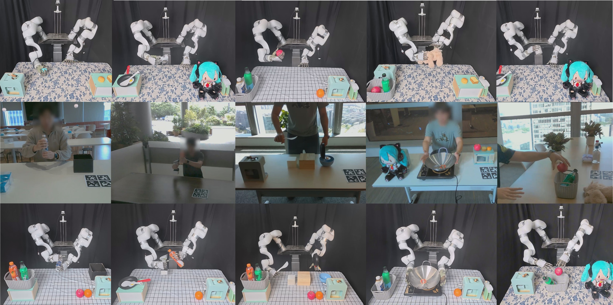
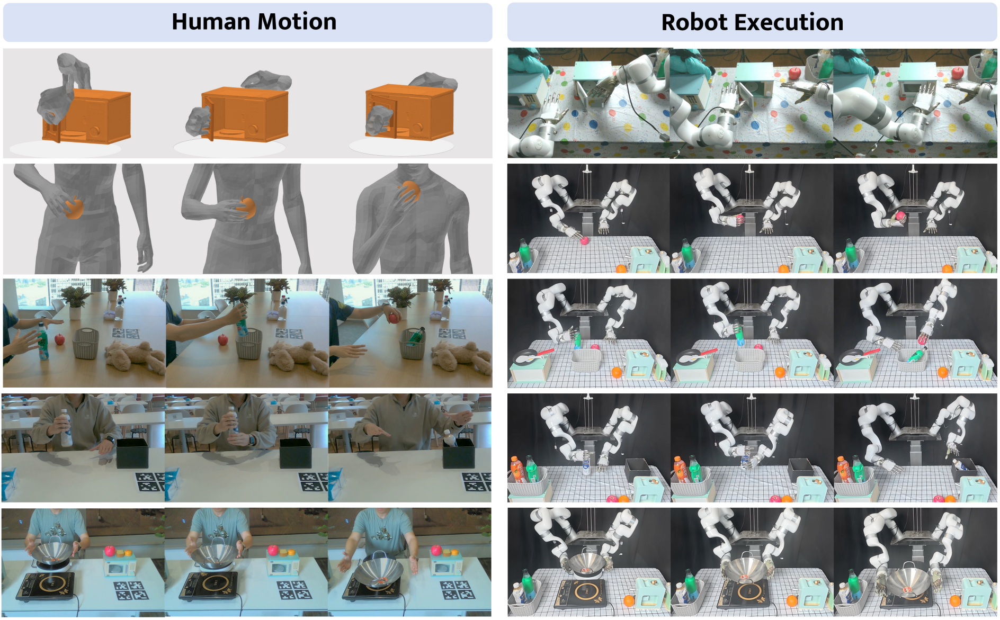

Reference-Guided Generalist Dexterous Manipulation from Human Motion and Videos
Learning generalist dexterous manipulation policies requires supervision that is both diverse and physically executable, yet collecting such data directly on robots remains costly and labor-intensive. We present DexReprise, a reference guided framework that converts offline human demonstrations into closed-loop dexterous robot behaviors. During training, DexReprise imports existing motion capture datasets as references into simulation, trains trajectory-conditioned reinforcement learning experts with a unified reward formulation, and distills their physically grounded rollouts into a single point-cloud-based conditional policy. At test time, the frozen policy conditions on robot observations and a new hand object reference from mocap or video, enabling zero-shot real-world execution without additional policy learning. Experiments on GRAB and ARCTIC, together with real-world evaluations from mocap and video references, show that a single reference-conditioned policy can generalize across diverse human-object trajectories and transfer them to dexterous robot execution.

DexReprise consists of three key components: (1) RL expert training from mocap data, (2) Conditional generalist policy distillation and (3) Sim-to-real transfer.